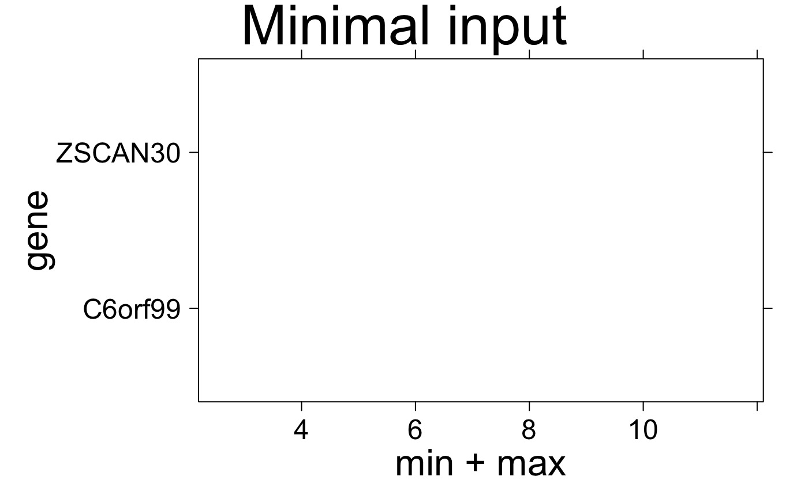
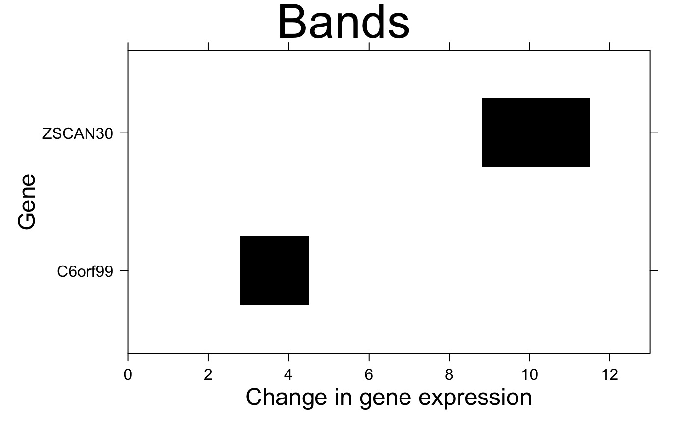
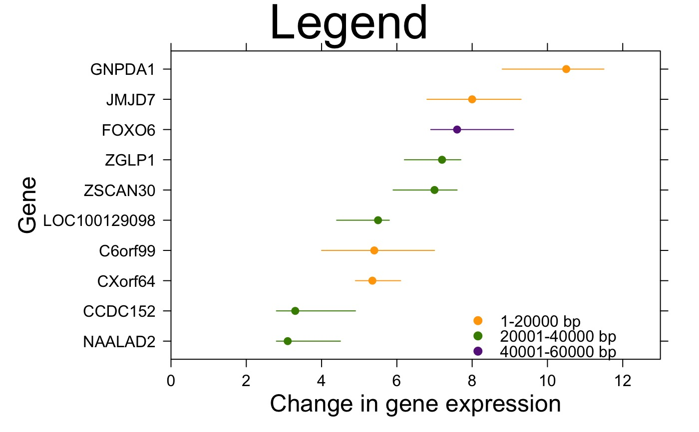
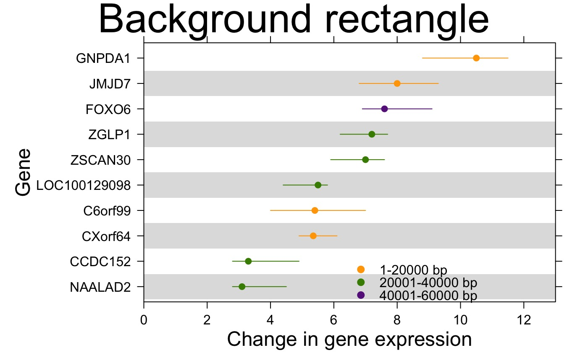
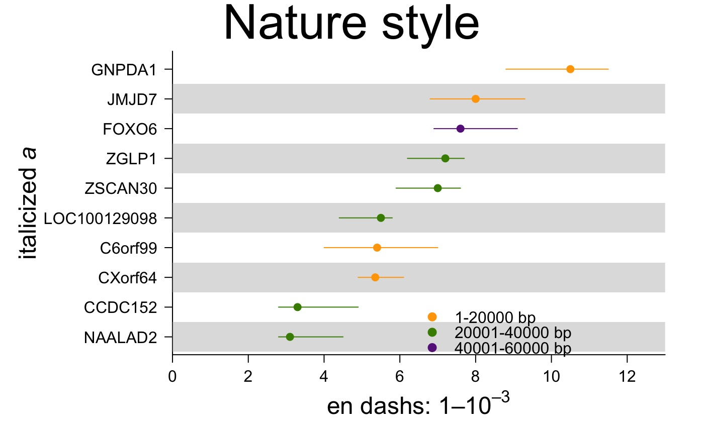

Make a segplot
create.segplot.RdTakes a data.frame and creates a segplot
Usage
create.segplot(
formula,
data,
filename = NULL,
main = NULL,
main.just = 'center',
main.x = 0.5,
main.y = 0.5,
main.cex = 3,
xlab.label = tail(sub('~', '', formula[-2]), 1),
ylab.label = tail(sub('~', '', formula[-3]), 1),
xlab.cex = 2,
ylab.cex = 2,
xlab.col = 'black',
ylab.col = 'black',
xlab.top.label = NULL,
xlab.top.cex = 2,
xlab.top.col = 'black',
xlab.top.just = 'center',
xlab.top.x = 0.5,
xlab.top.y = 0,
xaxis.lab = TRUE,
yaxis.lab = TRUE,
xaxis.cex = 1.5,
yaxis.cex = 1.5,
xaxis.col = 'black',
yaxis.col = 'black',
xaxis.fontface = 'bold',
yaxis.fontface = 'bold',
xaxis.rot = 0,
yaxis.rot = 0,
xaxis.tck = 1,
yaxis.tck = 1,
xlimits = NULL,
ylimits = NULL,
xat = TRUE,
yat = TRUE,
abline.h = NULL,
abline.v = NULL,
abline.lty = 1,
abline.lwd = 1,
abline.col = 'black',
segments.col = 'black',
segments.lwd = 1,
layout = NULL,
as.table = FALSE,
x.spacing = 0,
y.spacing = 0,
x.relation = 'same',
y.relation = 'same',
top.padding = 0.5,
bottom.padding = 2,
right.padding = 1,
left.padding = 2,
ylab.axis.padding = 0,
level = NULL,
col.regions = NULL,
centers = NULL,
plot.horizontal = TRUE,
draw.bands = FALSE,
pch = 16,
symbol.col = 'black',
symbol.cex = 1,
add.rectangle = FALSE,
xleft.rectangle = NULL,
ybottom.rectangle = NULL,
xright.rectangle = NULL,
ytop.rectangle = NULL,
col.rectangle = 'transparent',
alpha.rectangle = 1,
axes.lwd = 1,
key = NULL,
legend = NULL,
height = 6,
width = 6,
size.units = 'in',
resolution = 1600,
enable.warnings = FALSE,
description = 'Created with BoutrosLab.plotting.general',
style = 'BoutrosLab',
preload.default = 'custom',
use.legacy.settings = FALSE,
inside.legend.auto = FALSE,
disable.factor.sorting = FALSE
)Arguments
- formula
The formula used to extract the x & y components from the data-frame
- data
The data-frame to plot
- filename
Filename for tiff output, or if NULL returns the trellis object itself
- main
The main title for the plot (space is reclaimed if NULL)
- main.just
The justification of the main title for the plot, default is centered
- main.x
The x location of the main title, deault is 0.5
- main.y
The y location of the main title, default is 0.5
- main.cex
Size of text for main plot title, defaults to 3
- xlab.label
x-axis label
- ylab.label
y-axis label
- xlab.cex
Size of x-axis label, defaults to 2
- ylab.cex
Size of y-axis label, defaults to 2
- xlab.col
Colour of the x-axis label, defaults to “black”
- ylab.col
Colour of the y-axis label, defaults to “black”
- xlab.top.label
The label for the top x-axis
- xlab.top.cex
Size of top x-axis label
- xlab.top.col
Colour of the top x-axis label
- xlab.top.just
Justification of the top x-axis label, defaults to centered
- xlab.top.x
The x location of the top x-axis label
- xlab.top.y
The y location of the top y-axis label
- xaxis.lab
Vector listing x-axis tick labels, defaults to automatic
- yaxis.lab
Vector listing y-axis tick labels, defaults to automatic
- xaxis.cex
Size of x-axis scales, defaults to 1.5
- yaxis.cex
Size of y-axis scales, defaults to 1.5
- xaxis.col
Colour of the x-axis tick labels, defaults to “black”
- yaxis.col
Colour of the y-axis tick labels, defaults to “black”
- xaxis.fontface
Fontface for the x-axis scales, defaults to “plain”
- yaxis.fontface
Fontface for the y-axis scales, defaults to “plain”
- xaxis.rot
Counterclockwise rotation of text in x-axis scales in degrees, defaults to 0
- yaxis.rot
Counterclockwise rotation of text in y-axis scales in degrees, defaults to 0
- xaxis.tck
Specifies the length of the tick mark, defaults to 1 for both top and bottom axes
- yaxis.tck
Specifies the length of the tick mark, defaults to 1 for both top and bottom axes
- xlimits
Two-element vector giving the x-axis limits, defaults to automatic
- ylimits
Two-element vector giving the y-axis limits, defaults to automatic
- xat
Vector listing where the x-axis labels should be drawn, defaults to automatic
- yat
Vector listing where the y-axis labels should be drawn, defaults to automatic
- abline.h
Allow horizontal line to be drawn, default to NULL
- abline.v
Allow vertical line to be drawn, default to NULL
- abline.lty
Specifies horizontal line style, defaults to 1 (solid)
- abline.lwd
Specifies horizontal line width, defaults to 1
- abline.col
Horizontal line colour, defaults to black
- segments.col
Colour of segments, defaults to “black”
- segments.lwd
Line width of segments, defaults to 1
- layout
A vector specifying the number of columns, rows (e.g., c(2,1). Default is NULL; see lattice::xyplot for more details
- as.table
Specifies panel drawing order, default is FALSE which draws panels from bottom left corner, moving right then up. Set to TRUE to draw from top left corner, moving right then down
- x.spacing
A number specifying the distance between panels along the x-axis, defaults to 0
- y.spacing
A number specifying the distance between panels along the y-axis, defaults to 0
- x.relation
Allows x-axis scales to vary if set to “free”, defaults to “same”
- y.relation
Allows y-axis scales to vary if set to “free”, defaults to “same”
- top.padding
A number specifying the distance to the top margin, defaults to 0.1
- bottom.padding
A number specifying the distance to the bottom margin, defaults to 0.7
- right.padding
A number specifying the distance to the right margin, defaults to 0.1
- left.padding
A number specifying the distance to the left margin, defaults to 0.5
- ylab.axis.padding
A number specifying the distance of ylabel to the y-axis, defaults to 1
,
- level
Optional covariate that determines colour coding of the segments, if specified overwrites segments.col, can contain actual colors or values to determine colors, then col.regions should be defined
- col.regions
Vector of colors, define if level is numeric
- centers
Optional vector for centers of segments, defaults to NULL
- plot.horizontal
Logical whether segments should be drawn horizontally (default) or vertically
- draw.bands
Logical to specify whether to draw lines (default) or rectangles
- pch
Plotting character for centers
- symbol.col
Colour of plotting character for centers, defaults to “black”
- symbol.cex
Size of plotting character for centers, defaults to 1
- add.rectangle
Allow a rectangle to be drawn, default is FALSE
- xleft.rectangle
Specifies the left x coordinate of the rectangle to be drawn
- ybottom.rectangle
Specifies the bottom y coordinate of the rectangle to be drawn
- xright.rectangle
Specifies the right x coordinate of the rectangle to be drawn
- ytop.rectangle
Specifies the top y coordinate of the rectangle to be drawn
- col.rectangle
Specifies the colour to fill the rectangle's area
- alpha.rectangle
Specifies the colour bias of the rectangle to be drawn
- axes.lwd
Specifies axes line width, defaults to 1
- key
A list giving the key (legend). The default suppresses drawing
- legend
Add a legend to the plot. Helpful for adding multiple keys and adding keys to the margins of the plot. See xyplot.
- height
Figure height, defaults to 6 inches
- width
Figure width, defaults to 6 inches
- size.units
Figure units, defaults to inches
- resolution
Figure resolution in dpi, defaults to 1600
- enable.warnings
Print warnings if set to TRUE, defaults to FALSE
- description
Short description of image/plot; default NULL
- style
defaults to “BoutrosLab”, also accepts “Nature”, which changes parameters according to Nature formatting requirements
- preload.default
ability to set multiple sets of diffrent defaults depending on publication needs
- use.legacy.settings
boolean to set wheter or not to use legacy mode settings (font)
- inside.legend.auto
boolean specifying whether or not to use the automatic inside legend function
- disable.factor.sorting
Disable barplot auto sorting factors alphabetically/numerically
Value
If filename is NULL then returns the trellis object, otherwise creates a plot and returns a 0/1 success code.
Warning
If this function is called without capturing the return value, or specifying a filename, it may crash while trying to draw the histogram. In particular, if a script that uses such a call of create histogram is called by reading the script in from the command line, it will fail badly, with an error message about unavailable fonts:
Error in grid.Call.graphics("L_text", as.graphicsAnnot(x$label), x$x, )
Invalid font type
Calls: print ... drawDetails.text -> grid.Call.graphics -> .Call.graphics
Examples
set.seed(12345);
simple.data <- data.frame(
min = runif(10,5,15),
max = runif(10,15,25),
labels = as.factor(LETTERS[1:10])
);
create.segplot(
# filename = tempfile(pattern = 'Segplot_simple', fileext = '.tiff'),
formula = labels ~ min + max,
data = simple.data,
resolution = 50
);
# load some data
length.of.gene <- apply(microarray[1:10,60:61], 1, diff);
bin.length <- length.of.gene;
bin.length[which(bin.length < 20000)] <- 'A';
bin.length[which(bin.length < 40000)] <- 'B';
bin.length[which(bin.length < 60000)] <- 'C';
segplot.data <- data.frame(
min = apply(microarray[1:10,1:58], 1, min),
max = apply(microarray[1:10,1:58], 1, max),
median = apply(microarray[1:10,1:58], 1, median),
gene = rownames(microarray)[1:10],
# approximating length of gene
length = as.factor(bin.length)
);
# Minimal Input using real data
create.segplot(
# filename = tempfile(pattern = 'Segplot_Minimal_Input', fileext = '.tiff'),
formula = gene ~ min + max,
data = segplot.data,
main = 'Minimal input',
description = 'Segplot created by BoutrosLab.plotting.general',
resolution = 100
);
#> Warning: NAs introduced by coercion
#> Warning: no non-missing arguments to min; returning Inf
#> Warning: no non-missing arguments to max; returning -Inf
#> Warning: NAs introduced by coercion
#> Warning: NAs introduced by coercion

# Axes & Labels
create.segplot(
# filename = tempfile(pattern = 'Segplot_Axes_Labels', fileext = '.tiff'),
formula = gene ~ min + max,
data = segplot.data,
main = 'Axes & labels',
# Formatting axes
xlab.label = 'Change in gene expression',
ylab.label = 'Gene',
xaxis.cex = 1,
yaxis.cex = 1,
xlab.cex = 1.5,
ylab.cex = 1.5,
xlimits = c(0,13),
xat = seq(0, 12, 2),
description = 'Segplot created by BoutrosLab.plotting.general',
resolution = 100
);
#> Warning: NAs introduced by coercion
#> Warning: no non-missing arguments to min; returning Inf
#> Warning: no non-missing arguments to max; returning -Inf
#> Warning: NAs introduced by coercion
#> Warning: NAs introduced by coercion
# \donttest{
# Bands
create.segplot(
# filename = tempfile(pattern = 'Segplot_Bands', fileext = '.tiff'),
formula = gene ~ min + max,
data = segplot.data,
main = 'Bands',
xlab.label = 'Change in gene expression',
ylab.label = 'Gene',
xaxis.cex = 1,
yaxis.cex = 1,
xlab.cex = 1.5,
ylab.cex = 1.5,
xlimits = c(0,13),
xat = seq(0, 12, 2),
# drawing rectangles instead of lines
draw.bands = TRUE,
description = 'Segplot created by BoutrosLab.plotting.general',
resolution = 100
);
#> Warning: NAs introduced by coercion
#> Warning: no non-missing arguments to min; returning Inf
#> Warning: no non-missing arguments to max; returning -Inf
#> Warning: NAs introduced by coercion
#> Warning: NAs introduced by coercion

# Colours
create.segplot(
# filename = tempfile(pattern = 'Segplot_Colours', fileext = '.tiff'),
formula = reorder(gene, median) ~ min + max,
data = segplot.data,
main = 'Colours',
xlab.label = 'Change in gene expression',
ylab.label = 'Gene',
xaxis.cex = 1,
yaxis.cex = 1,
xlab.cex = 1.5,
ylab.cex = 1.5,
xlimits = c(0,13),
xat = seq(0, 12, 2),
draw.bands = FALSE,
# Changing the colours based on a covariate ('level' parameter)
level = segplot.data$length,
col.regions = default.colours(3),
description = 'Segplot created by BoutrosLab.plotting.general',
resolution = 100
);
# Median
create.segplot(
# filename = tempfile(pattern = 'Segplot_Median', fileext = '.tiff'),
formula = gene ~ min + max,
data = segplot.data,
main = 'Medians',
xlab.label = 'Change in gene expression',
ylab.label = 'Gene',
xaxis.cex = 1,
yaxis.cex = 1,
xlab.cex = 1.5,
ylab.cex = 1.5,
xlimits = c(0,13),
draw.bands = FALSE,
xat = seq(0, 12, 2),
level = segplot.data$length,
col.regions = default.colours(3),
# Adding center values
centers = segplot.data$median,
description = 'Segplot created by BoutrosLab.plotting.general',
resolution = 100
);
#> Warning: NAs introduced by coercion
#> Warning: no non-missing arguments to min; returning Inf
#> Warning: no non-missing arguments to max; returning -Inf
# Reorder by center value
create.segplot(
# filename = tempfile(pattern = 'Segplot_Reorder', fileext = '.tiff'),
formula = reorder(gene, median) ~ min + max,
data = segplot.data,
main = 'Reordered',
xlab.label = 'Change in gene expression',
ylab.label = 'Gene',
xaxis.cex = 1,
yaxis.cex = 1,
xlab.cex = 1.5,
ylab.cex = 1.5,
xlimits = c(0,13),
xat = seq(0, 12, 2),
draw.bands = FALSE,
centers = segplot.data$median,
level = segplot.data$length,
col.regions = default.colours(3),
description = 'Segplot created by BoutrosLab.plotting.general',
resolution = 100
);
# Legend
create.segplot(
# filename = tempfile(pattern = 'Segplot_Legend', fileext = '.tiff'),
formula = reorder(gene, median) ~ min + max,
data = segplot.data,
main = 'Legend',
xlab.label = 'Change in gene expression',
ylab.label = 'Gene',
xaxis.cex = 1,
yaxis.cex = 1,
xlab.cex = 1.5,
ylab.cex = 1.5,
xlimits = c(0,13),
xat = seq(0, 12, 2),
draw.bands = FALSE,
centers = segplot.data$median,
level = segplot.data$length,
col.regions = default.colours(3),
# Adding legend to explain colours
legend = list(
inside = list(
fun = draw.key,
args = list(
key = list(
points = list(
col = default.colours(3),
pch = 19,
cex = 1
),
text = list(
lab = c('1-20000 bp', '20001-40000 bp','40001-60000 bp')
),
padding.text = 1,
cex = 1
)
),
x = 0.60,
y = 0.15,
corner = c(0,1)
)
),
description = 'Segplot created by BoutrosLab.plotting.general',
resolution = 100
);

# Background
create.segplot(
# filename = tempfile(pattern = 'Segplot_Background', fileext = '.tiff'),
formula = reorder(gene, median) ~ min + max,
data = segplot.data,
main = 'Background rectangle',
xlab.label = 'Change in gene expression',
ylab.label = 'Gene',
xaxis.cex = 1,
yaxis.cex = 1,
xlab.cex = 1.5,
ylab.cex = 1.5,
xlimits = c(0,13),
xat = seq(0, 12, 2),
draw.bands = FALSE,
centers = segplot.data$median,
level = segplot.data$length,
col.regions = default.colours(3),
# Adding legend to explain colours
legend = list(
inside = list(
fun = draw.key,
args = list(
key = list(
points = list(
col = default.colours(3),
pch = 19,
cex = 1
),
text = list(
lab = c('1-20000 bp', '20001-40000 bp','40001-60000 bp')
),
padding.text = 1,
cex = 1
)
),
x = 0.50,
y = 0.15,
corner = c(0,1)
)
),
# adding background shading
add.rectangle = TRUE,
xleft.rectangle = 0,
ybottom.rectangle = seq(0.5, 8.5, 2),
xright.rectangle = 13,
ytop.rectangle = seq(1.5, 9.5, 2),
col.rectangle = 'grey',
alpha.rectangle = 0.5,
description = 'Segplot created by BoutrosLab.plotting.general',
resolution = 100
);

# Nature style
create.segplot(
# filename = tempfile(pattern = 'Segplot_Nature_style', fileext = '.tiff'),
formula = reorder(gene, median) ~ min + max,
data = segplot.data,
main = 'Nature style',
xaxis.cex = 1,
yaxis.cex = 1,
xlab.cex = 1.5,
ylab.cex = 1.5,
xlimits = c(0,13),
xat = seq(0, 12, 2),
draw.bands = FALSE,
centers = segplot.data$median,
level = segplot.data$length,
col.regions = default.colours(3),
legend = list(
inside = list(
fun = draw.key,
args = list(
key = list(
points = list(
col = default.colours(3),
pch = 19,
cex = 1
),
text = list(
lab = c('1-20000 bp', '20001-40000 bp','40001-60000 bp')
),
padding.text = 1,
cex = 1
)
),
x = 0.50,
y = 0.15,
corner = c(0,1)
)
),
add.rectangle = TRUE,
xleft.rectangle = 0,
ybottom.rectangle = seq(0.5, 8.5, 2),
xright.rectangle = 13,
ytop.rectangle = seq(1.5, 9.5, 2),
col.rectangle = 'grey',
alpha.rectangle = 0.5,
# set style to Nature
style = 'Nature',
# demonstrating how to italicize character variables
ylab.label = expression(paste('italicized ', italic('a'))),
# demonstrating how to create en-dashes
xlab.label = expression(paste('en dashs: 1','\u2013', '10'^'\u2013', ''^3)),
description = 'Segplot created by BoutrosLab.plotting.general',
resolution = 100
);
#> Warning: Setting resolution to 1200 dpi.
#> Warning: Nature also requires italicized single-letter variables and en-dashes
#> for ranges and negatives. See example in documentation for how to do this.
#> Warning: Avoid red-green colour schemes, create TIFF files, do not outline the figure or legend.

# example of bands and lines
create.segplot(
# filename = tempfile(pattern = 'Segplot_BandsAndLines', fileext = '.tiff'),
formula = labels ~ min + max,
data = simple.data,
draw.bands = c(1,3,5,7,9),
resolution = 200
);
# }